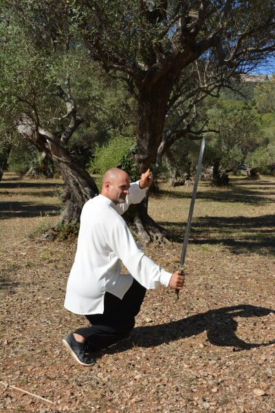
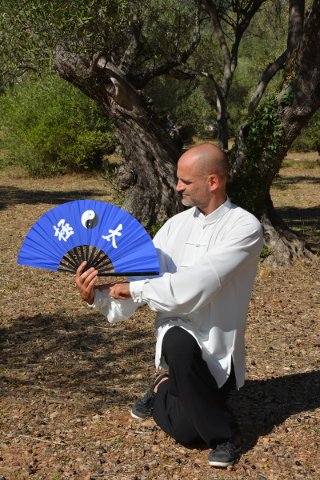
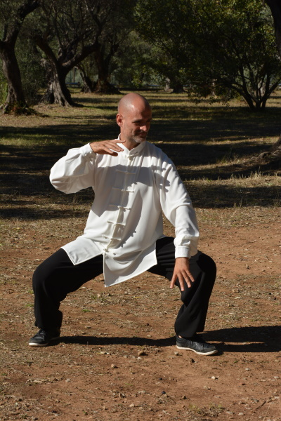

La Pratique
Mouvements de base
- - Mouvements d'ouverture.
- - Enroulements frontaux et latéraux / Frapper avec le talon.
- - Descentes et étirements.
- - Travail de la posture / Enracinement / Circulation du souffle.
- - Absorptions latérale et frontale alternées / Changements d'appuis / Motricité croisée.
- - Liaison bas et haut du corps.

Forme
- - Trois séquences (Duan) d'une durée de 10, 20 et 30 minutes
- - Les 13 postures (Shi San Shi), travail basé sur les huits mouvements (huit trigrammes) et les cinq déplacements (cinq éléments)
- - Forme des 24 mouvements de Pékin. Elle ne fait pas partie du corpus du Yangjia Michuan. La forme de Pékin est une compilation conçue par la Commission chinoise des sports en 1956, à la demande du Gouvernement, avec pour objectif de standardiser et de populariser le Taiji Quan. D'une durée assez courte (10 minutes), elle est enseignée au sein de l'association afin de travailler sur une forme dotée d'une motricité différente de celle utilisée en Yangjia Michuan et de faire prendre conscience aux pratiquants de ces différences.
- - Travail des applications martiales (travail à deux) sur mouvements de la forme.
Tui Shou (Poussée des mains)
- – Quinze exercices de base à deux comprenant le grand déplacement (Da Lu) et les huit techniques (Ba Fa).
- – Multiples exercices d'écoute, d'ancrage, d'enracinement, de centrage, de poussée etc.
- – Pratique du Tui Shou à pas fixes et pas mobiles.
- – Découverte et pratique ludique mais également possibilité de pratiques plus intensives (préparation aux examens fédéraux – préparation aux compétitions).
Enchaînement 1er Duan
Tui Shou libre fixe
Tui Shou libre fixe
Tui Shou libre mobile
Tui Shou libre mobile
Armes
- – Forme de la flutte des 8 immortels.
- – Forme de l'éventail.
- – Forme de l'épée Kunlun précédée du travail des huit coupes.
- – Forme de la perche précédée des exercices de base.


Nei Gong (travail interne)
Travail d'assise de rejety - absorption et circulation du souffle
